2025 Advanced Higher Mathematics - Paper 2 marking instructions
Source: Scottish Qualifications Authority (SQA) / Qualifications Scotland. This is a StemInteract HTML companion, not an official HTML edition. Selectable text is supplied alongside original page images. Use the images or original PDF for equations, powers, fractions, vector notation, tables and diagrams; text extraction cannot fully preserve mathematical layout.
Jump to a question
PDF page 1
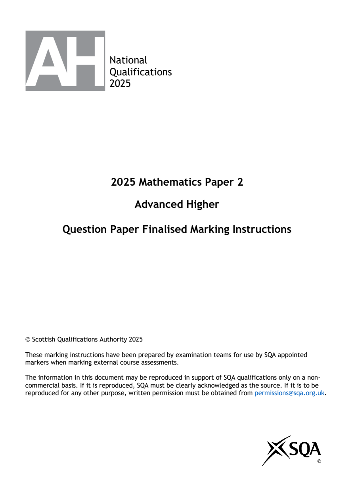
Selectable page text
National
Qualifications
2025
2025 Mathematics Paper 2
Advanced Higher
Question Paper Finalised Marking Instructions
© Scottish Qualifications Authority 2025
These marking instructions have been prepared by examination teams for use by SQA appointed
markers when marking external course assessments.
The information in this document may be reproduced in support of SQA qualifications only on a non-
commercial basis. If it is reproduced, SQA must be clearly acknowledged as the source. If it is to be
reproduced for any other purpose, written permission must be obtained from permissions@sqa.org.uk.
©PDF page 2
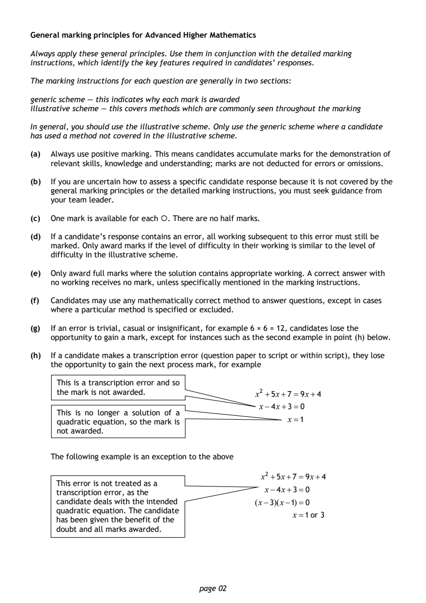
Selectable page text
General marking principles for Advanced Higher Mathematics
Always apply these general principles. Use them in conjunction with the detailed marking
instructions, which identify the key features required in candidates’ responses.
The marking instructions for each question are generally in two sections:
generic scheme — this indicates why each mark is awarded
illustrative scheme — this covers methods which are commonly seen throughout the marking
In general, you should use the illustrative scheme. Only use the generic scheme where a candidate
has used a method not covered in the illustrative scheme.
(a) Always use positive marking. This means candidates accumulate marks for the demonstration of
relevant skills, knowledge and understanding; marks are not deducted for errors or omissions.
(b) If you are uncertain how to assess a specific candidate response because it is not covered by the
general marking principles or the detailed marking instructions, you must seek guidance from
your team leader.
(c) One mark is available for each . There are no half marks.
(d) If a candidate’s response contains an error, all working subsequent to this error must still be
marked. Only award marks if the level of difficulty in their working is similar to the level of
difficulty in the illustrative scheme.
(e) Only award full marks where the solution contains appropriate working. A correct answer with
no working receives no mark, unless specifically mentioned in the marking instructions.
(f) Candidates may use any mathematically correct method to answer questions, except in cases
where a particular method is specified or excluded.
(g) If an error is trivial, casual or insignificant, for example 6 × 6 = 12, candidates lose the
opportunity to gain a mark, except for instances such as the second example in point (h) below.
(h) If a candidate makes a transcription error (question paper to script or within script), they lose
the opportunity to gain the next process mark, for example
This is a transcription error and so
the mark is not awarded. x² +5x+7 =9x+4
x−4x+3=0
This is no longer a solution of a
x=1
quadratic equation, so the mark is
not awarded.
The following example is an exception to the above
x² +5x+7 =9x+4
This error is not treated as a
x−4x+3=0
transcript ion err or, as the
candidate deals with the intended (x−3)(x−1)=0
quadratic equation. The candidate
x=1 or 3
has been given the benefit of the
doubt and all marks awarded.
page 02PDF page 3
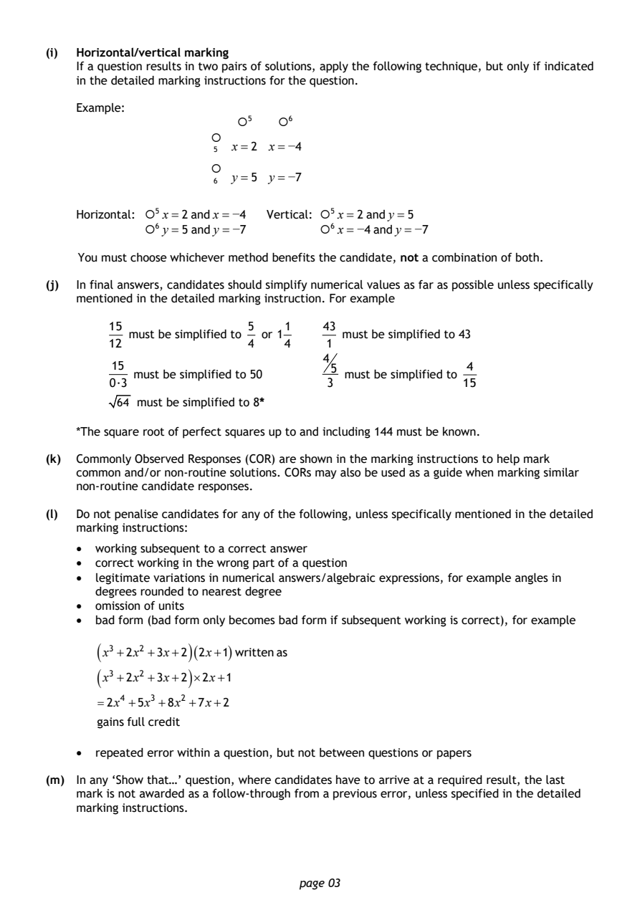
Selectable page text
(i) Horizontal/vertical marking
If a question results in two pairs of solutions, apply the following technique, but only if indicated
in the detailed marking instructions for the question.
Example:
5 6
x = 2 x = −4
5
y = 5 y = −7
6
Horizontal: 5 x = 2 and x = −4 Vertical: 5 x = 2 and y = 5
6 y = 5 and y = −7 6 x = −4 and y = −7
You must choose whichever method benefits the candidate, not a combination of both.
(j) In final answers, candidates should simplify numerical values as far as possible unless specifically
mentioned in the detailed marking instruction. For example
15 5 1 43
must be simplified to or 1 must be simplified to 43
12 4 4 1
4
15 5 4
must be simplified to 50 must be simplified to
0·3 3 15
64 must be simplified to 8*
*The square root of perfect squares up to and including 144 must be known.
(k) Commonly Observed Responses (COR) are shown in the marking instructions to help mark
common and/or non-routine solutions. CORs may also be used as a guide when marking similar
non-routine candidate responses.
(l) Do not penalise candidates for any of the following, unless specifically mentioned in the detailed
marking instructions:
• working subsequent to a correct answer
• correct working in the wrong part of a question
• legitimate variations in numerical answers/algebraic expressions, for example angles in
degrees rounded to nearest degree
• omission of units
• bad form (bad form only becomes bad form if subsequent working is correct), for example
(
x³ +2x² +3x+2
)(2x+1)
written as
( )
x³ +2x² +3x+2 ×2x+1
=2x⁴ +5x³ +8x² +7x+2
gainsfull credit
• repeated error within a question, but not between questions or papers
(m) In any ‘Show that…’ question, where candidates have to arrive at a required result, the last
mark is not awarded as a follow-through from a previous error, unless specified in the detailed
marking instructions.
page 03PDF page 4
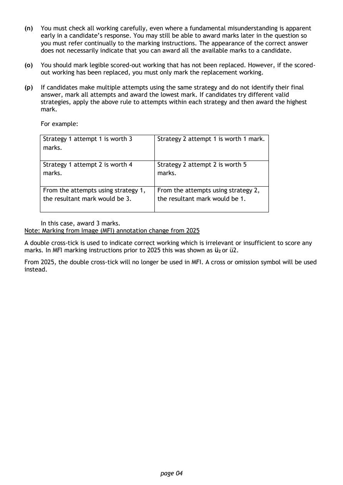
Selectable page text
(n) You must check all working carefully, even where a fundamental misunderstanding is apparent
early in a candidate’s response. You may still be able to award marks later in the question so
you must refer continually to the marking instructions. The appearance of the correct answer
does not necessarily indicate that you can award all the available marks to a candidate.
(o) You should mark legible scored-out working that has not been replaced. However, if the scored-
out working has been replaced, you must only mark the replacement working.
(p) If candidates make multiple attempts using the same strategy and do not identify their final
answer, mark all attempts and award the lowest mark. If candidates try different valid
strategies, apply the above rule to attempts within each strategy and then award the highest
mark.
For example:
Strategy 1 attempt 1 is worth 3 Strategy 2 attempt 1 is worth 1 mark.
marks.
Strategy 1 attempt 2 is worth 4 Strategy 2 attempt 2 is worth 5
marks. marks.
From the attempts using strategy 1, From the attempts using strategy 2,
the resultant mark would be 3. the resultant mark would be 1.
In this case, award 3 marks.
Note: Marking from Image (MFI) annotation change from 2025
A double cross-tick is used to indicate correct working which is irrelevant or insufficient to score any
marks. In MFI marking instructions prior to 2025 this was shown as ü or ü2.
2
From 2025, the double cross-tick will no longer be used in MFI. A cross or omission symbol will be used
instead.
page 04PDF page 5
Paper 2, Question 1Paper 2, Question 2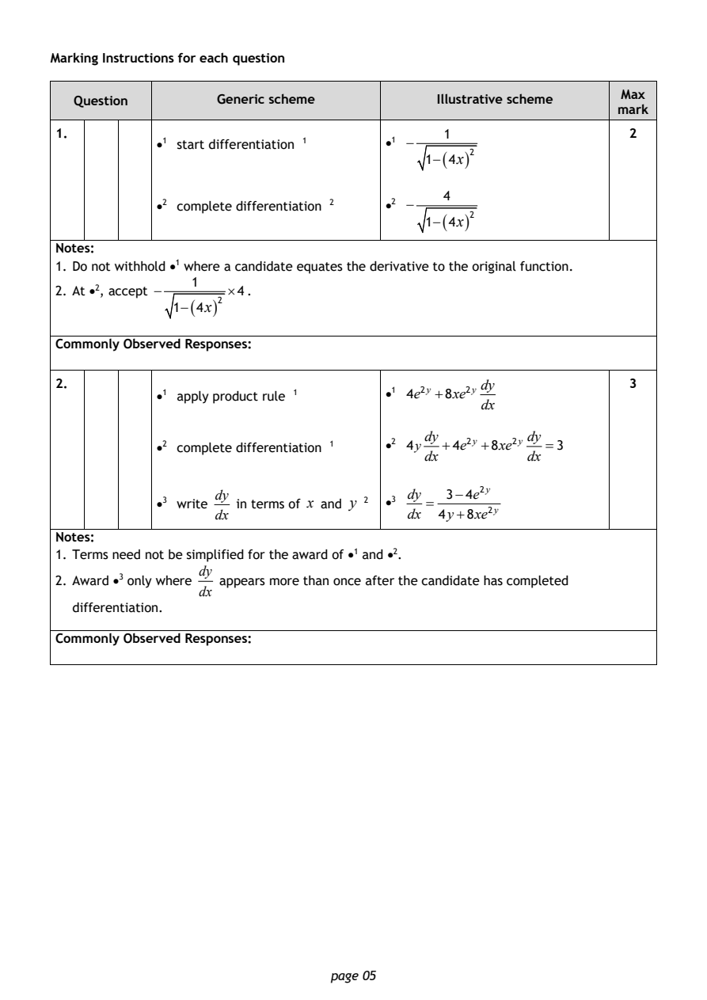
Selectable page text
Marking Instructions for each question
Max
Question Generic scheme Illustrative scheme
mark
1. 1 2
•1 start differentiation ¹ •1 −
1−(4x)²
4
•2 complete differentiation ² •2 −
1−(4x)²
Notes:
1. Do not withhold •¹ where a candidate equates the derivative to the original function.
1
2. At •², accept − ×4.
1−(4x)²
Commonly Observed Responses:
2. dy 3
•1 apply product rule ¹ •1 4e²^{y} +8xe²^{y}
dx
dy dy
•2 complete differentiation ¹ •2 4y +4e²^{y} +8xe²^{y} =3
dx dx
dy dy 3−4e²^{y}
•3 write in terms of x and y ² •3 =
dx dx 4y+8xe²^{y}
Notes:
1. Terms need not be simplified for the award of •¹ and •².
dy
2. Award •³ only where appears more than once after the candidate has completed
dx
differentiation.
Commonly Observed Responses:
page 05PDF page 6
Paper 2, Question 3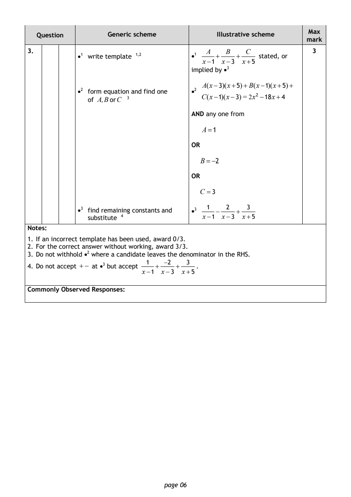
Selectable page text
Max
Question Generic scheme Illustrative scheme
mark
3. A B C 3
•1 write template ¹^{,}² •1 + + stated, or
x−1 x−3 x+5
implied by •³
A(x−3)(x+5)+B(x−1)(x+5)+
•2 form equation and find one •2
C(x−1)(x−3)= 2x² −18x+4
of A,BorC ³
AND any one from
A=1
OR
B=−2
OR
C =3
1 2 3
•3 find remaining constants and •3 − +
substitute ⁴ x−1 x−3 x+5
Notes:
1. If an incorrect template has been used, award 0/3.
2. For the correct answer without working, award 3/3.
3. Do not withhold •² where a candidate leaves the denominator in the RHS.
1 −2 3
4. Do not accept +− at •³ but accept + + .
x−1 x−3 x+5
Commonly Observed Responses:
page 06PDF page 7
Paper 2, Question 4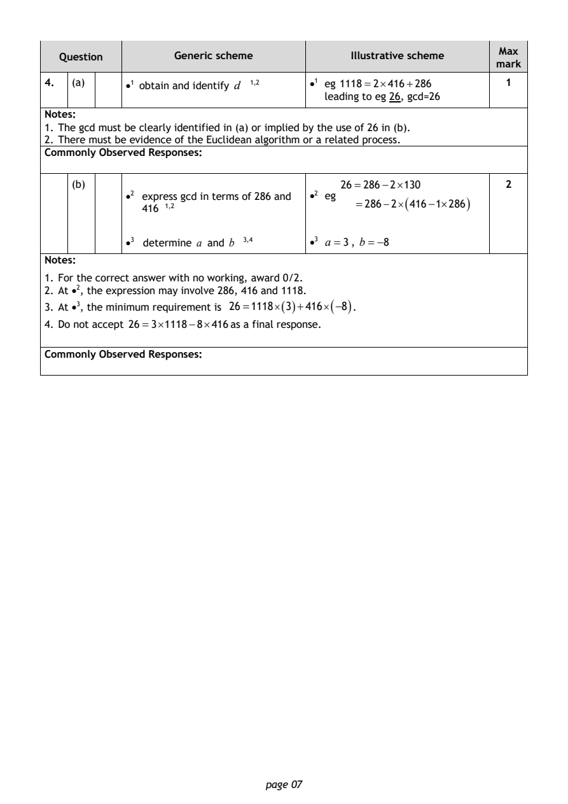
Selectable page text
Max
Question Generic scheme Illustrative scheme
mark
4. (a) •1 obtain and identify d ¹^{,}² •1 eg 1118=2×416+286 1
leading to eg 26, gcd=26
Notes:
1. The gcd must be clearly identified in (a) or implied by the use of 26 in (b).
2. There must be evidence of the Euclidean algorithm or a related process.
Commonly Observed Responses:
(b) 26=286−2×130 2
•2 expres₂s gcd in terms of 286 and •2 eg
=286−2×(416−1×286)
416 ¹^{,}
•3 determine a and b ³^{,}⁴ •3 a =3, b=−8
Notes:
1. For the correct answer with no working, award 0/2.
2. At •², the expression may involve 286, 416 and 1118.
3. At •³, the minimum requirement is
26=1118×(3)+416× (−8)
.
4. Do not accept 26=3×1118−8×416as a final response.
Commonly Observed Responses:
page 07PDF page 8
Paper 2, Question 5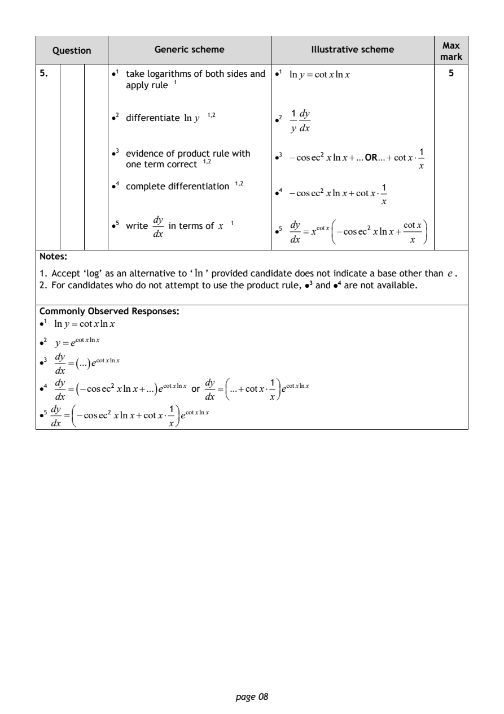
Selectable page text
Max
Question Generic scheme Illustrative scheme
mark
5. •1 take logarithms of both sides and •¹ ln y=cotxlnx 5
apply rule ¹
1 dy
•2 differentiate ln y ¹^{,}² •2
y dx
•3 evidence of product₂ rule with 1
•3 −cosec² xlnx+...OR...+cotx⋅
one term correct ¹^{,} x
•4 complete differentiation ¹^{,}² 1
•4 −cosec² xlnx+cotx⋅
x
dy
•5 write in terms of x ¹ dy cotx
dx
•5 = x^{c}^{o}^{t}^{x}
−cosec² xlnx+
dx x
Notes:
1. Accept ‘log’ as an alternative to ‘ln’ provided candidate does not indicate a base other than e.
2. For candidates who do not attempt to use the product rule, •³ and •⁴ are not available.
Commonly Observed Responses:
•1 ln y=cotxlnx
•2 y=e^{c}^{o}^{t}^{x}^{l}ⁿx
dy
•3 =(...)e^{c}^{o}^{t}^{x}^{l}ⁿx
dx
•4 dy = ( −cosec² xlnx+... ) e^{c}^{o}^{t}^{x}^{l}ⁿx or dy = ...+cotx⋅ 1 e^{c}^{o}^{t}^{x}^{l}ⁿx
dx dx x
dy 1
•5 =−cosec² xlnx+cotx⋅ e^{c}^{o}^{t}^{x}^{l}ⁿx
dx x
page 08PDF page 9
Paper 2, Question 6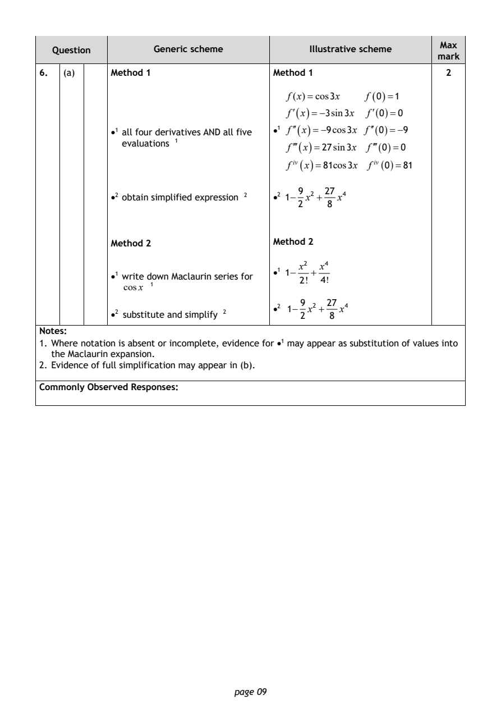
Selectable page text
Max
Question Generic scheme Illustrative scheme
mark
6. (a) Method 1 Method 1 2
f(x)=cos3x f (0)=1
f′(x)=−3sin3x f′(0)=0
•1 all four derivatives AND all five •1 f′′(x)=−9cos3x f′′(0)=−9
evaluations ¹ f′′′(x)=27sin3x f′′′(0)=0
fⁱ^{v}(x)=81cos3x fⁱ^{v}(0)=81
9 27
•2 obtain simplified expression ² •2 1− x² + x⁴
2 8
Method 2 Method 2
x² x⁴
•1 write down Maclaurin series for
•1 1− +
2! 4!
cosx ¹
9 27
•2 1− x² + x⁴
•2 substitute and simplify ² 2 8
Notes:
1. Where notation is absent or incomplete, evidence for •¹ may appear as substitution of values into
the Maclaurin expansion.
2. Evidence of full simplification may appear in (b).
Commonly Observed Responses:
page 09PDF page 10
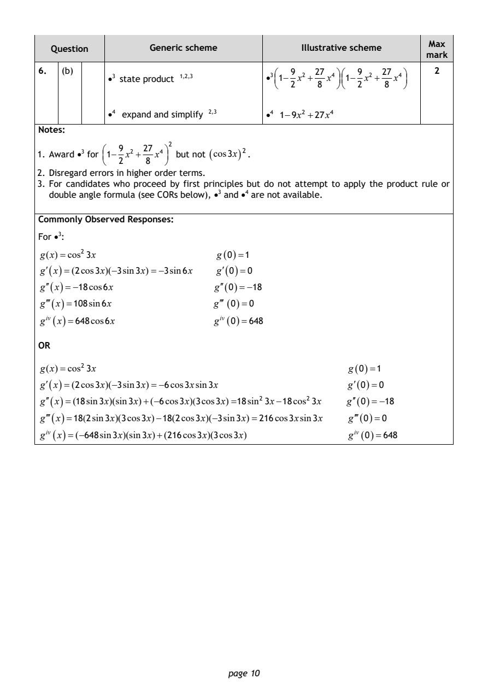
Selectable page text
Max
Question Generic scheme Illustrative scheme
mark
6. (b) 9 27 9 27 2
•3 state product ¹^{,}²^{,}3 •3 1− x² + x⁴1− x² + x⁴
2 8 2 8
•4 expand and simplify ²^{,}³ •4 1−9x² +27x⁴
Notes:
1. Award •³ for 1− 9 x² + 27 x⁴ ² but not (cos3x)².
2 8
2. Disregard errors in higher order terms.
3. For candidates who proceed by first principles but do not attempt to apply the product rule or
double angle formula (see CORs below), •³ and •⁴ are not available.
Commonly Observed Responses:
For •³:
g(x)=cos²3x g(0)=1
g′(x)=(2cos3x)(−3sin3x)=−3sin6x g′(0)=0
g′′(x)=−18cos6x g′′(0)=−18
g′′′(x)=108sin6x g′′′ (0)=0
gⁱ^{v}(x)=648cos6x gⁱ^{v}(0)=648
OR
g(x)=cos²3x g(0)=1
g′(x)=(2cos3x)(−3sin3x)=−6cos3xsin3x g′(0)=0
g′′(x)=(18sin3x)(sin3x)+(−6cos3x)(3cos3x)=18sin²3x−18cos²3x g′′(0)=−18
g′′′(x)=18(2sin3x)(3cos3x)−18(2cos3x)(−3sin3x)=216cos3xsin3x g′′′(0)=0
gⁱ^{v}(x)=(−648sin3x)(sin3x)+(216cos3x)(3cos3x) gⁱ^{v}(0)=648
page 10PDF page 11
Paper 2, Question 7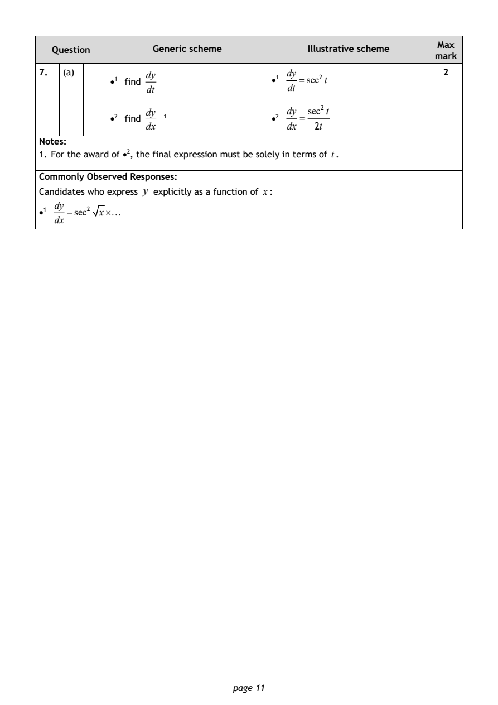
Selectable page text
Max
Question Generic scheme Illustrative scheme
mark
7. (a) dy dy 2
•1 find •1 =sec²t
dt dt
dy ₁ dy sec²t
•2 find •2 =
dx dx 2t
Notes:
1. For the award of •², the final expression must be solely in terms of t.
Commonly Observed Responses:
Candidates who express y explicitly as a function of x:
dy
•1 =sec² x×
dx
page 11PDF page 12
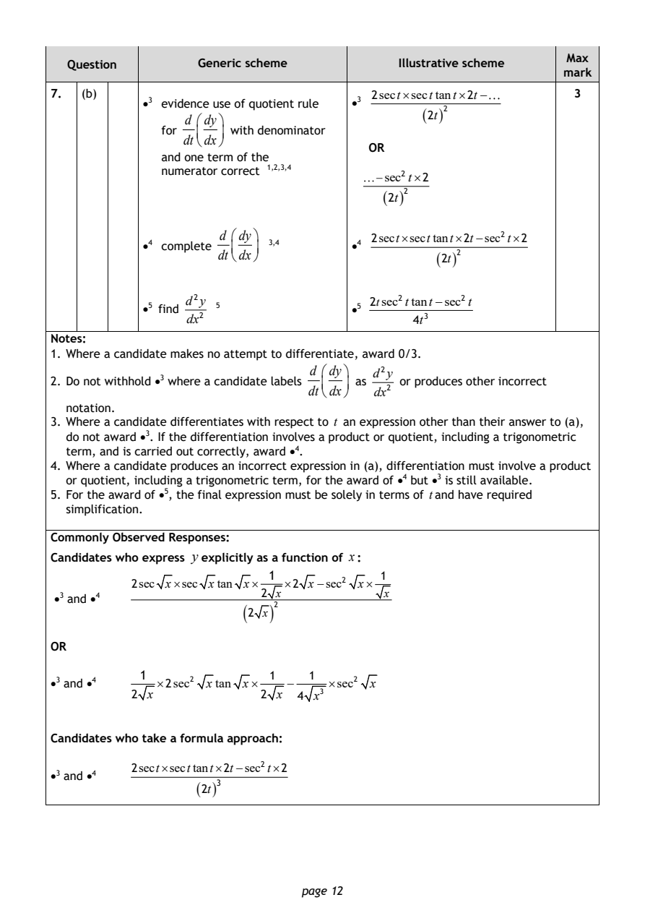
Selectable page text
Max
Question Generic scheme Illustrative scheme
mark
7. (b) 2sect×secttant×2t− 3
•3 evidence use of quotient rule •3
(2t)²
d dy
for with denominator
dtdx
OR
and one term of the ₃_{,}₄
numerator correct ¹^{,}²^{,}
−sec²t×2
(2t)²
d dy
2sect×secttant×2t−sec²t×2
•4 complete 4 •4
dtdx ³^{,} (2t)²
d²y ₅ 2tsec²ttant−sec²t
•5 find •5
dx² 4t³
Notes:
1. Where a candidate makes no attempt to differentiate, award 0/3.
d dy d²y
2. Do not withhold •³ where a candidate labels as or produces other incorrect
dtdx dx²
notation.
3. Where a candidate differentiates with respect to t an expression other than their answer to (a),
do not award •³. If the differentiation involves a product or quotient, including a trigonometric
term, and is carried out correctly, award •⁴.
4. Where a candidate produces an incorrect expression in (a), differentiation must involve a product
or quotient, including a trigonometric term, for the award of •⁴ but •³ is still available.
5. For the award of •⁵, the final expression must be solely in terms of tand have required
simplification.
Commonly Observed Responses:
Candidates who express yexplicitly as a function of x:
1 1
2sec x×sec xtan x× ×2 x−sec² x×
2 x x
•3 and •⁴
( )
2 x ²
OR
1 1 1
•3 and •⁴ ×2sec² xtan x× − ×sec² x
2 x 2 x 4 x³
Candidates who take a formula approach:
2sect×secttant×2t−sec²t×2
•3 and •⁴
(2t)³
page 12PDF page 13
Paper 2, Question 8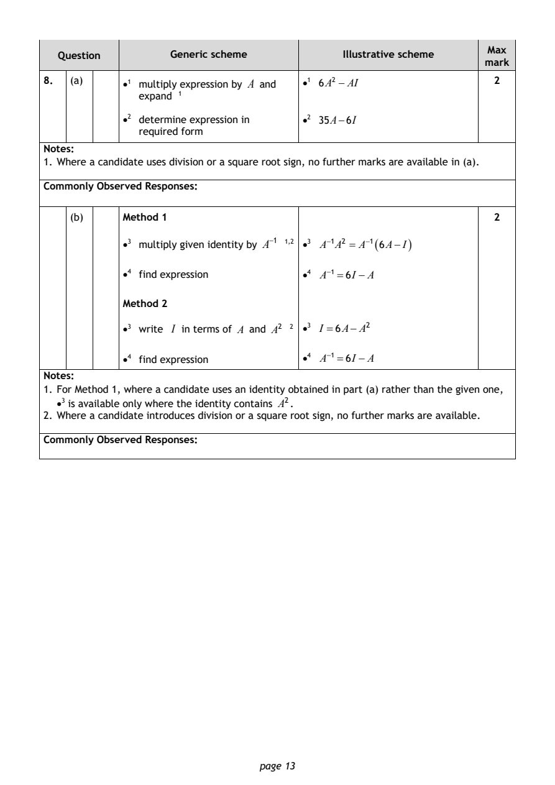
Selectable page text
Max
Question Generic scheme Illustrative scheme
mark
8. (a) •1 multiply expression by A and •1 6A² −AI 2
expand ¹
•2 determine expression in •2 35A−6I
required form
Notes:
1. Where a candidate uses division or a square root sign, no further marks are available in (a).
Commonly Observed Responses:
(b) Method 1 2
•3 multiply given identity by A⁻¹ ¹^{,}2 •3 A⁻¹A² = A⁻¹(6A−I)
•4 find expression •4 A⁻¹=6I −A
Method 2
•3 write I in terms of A and A² ² •3 I =6A−A²
•4 find expression •4 A⁻¹=6I −A
Notes:
1. For Method 1, where a candidate uses an identity obtained in part (a) rather than the given one,
•3 is available only where the identity contains A².
2. Where a candidate introduces division or a square root sign, no further marks are available.
Commonly Observed Responses:
page 13PDF page 14
Paper 2, Question 9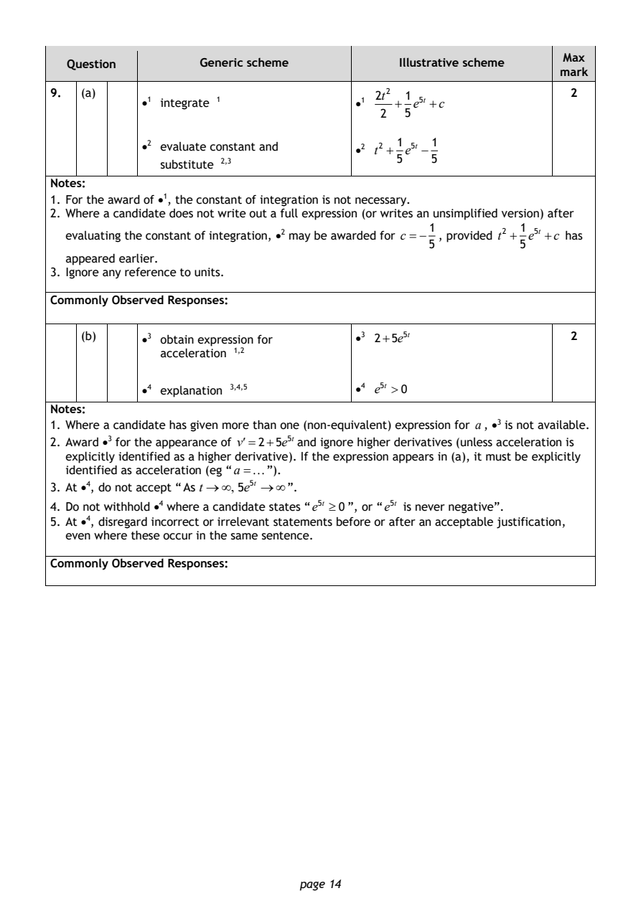
Selectable page text
Max
Question Generic scheme Illustrative scheme
mark
9. (a) 2t² 1 2
•1 integrate ¹ •1 + e⁵^{t} +c
2 5
•2 evaluate constant and •2 t² + 1 e⁵^{t} − 1
5 5
substitute ²^{,}³
Notes:
1. For the award of •¹, the constant of integration is not necessary.
2. Where a candidate does not write out a full expression (or writes an unsimplified version) after
1 1
evaluating the constant of integration, •² may be awarded for c=− , provided t² + e⁵^{t} +c has
5 5
appeared earlier.
3. Ignore any reference to units.
Commonly Observed Responses:
(b) •3 obtain expressi_{,}₂on for •3 2+5e⁵^{t} 2
acceleration ¹
•4 explanation ³^{,}⁴^{,}5 •4 e⁵^{t} >0
Notes:
1. Where a candidate has given more than one (non-equivalent) expression for a, •³ is not available.
2. Award •³ for the appearance of v′=2+5e⁵^{t} and ignore higher derivatives (unless acceleration is
explicitly identified as a higher derivative). If the expression appears in (a), it must be explicitly
identified as acceleration (eg “a = ”).
3. At •⁴, do not accept “As t →∞, 5e⁵^{t} →∞”.
4. Do not withhold •⁴ where a candidate states “e⁵^{t} ≥0”, or “e⁵^{t} is never negative”.
5. At •⁴, disregard incorrect or irrelevant statements before or after an acceptable justification,
even where these occur in the same sentence.
Commonly Observed Responses:
page 14PDF page 15
Paper 2, Question 10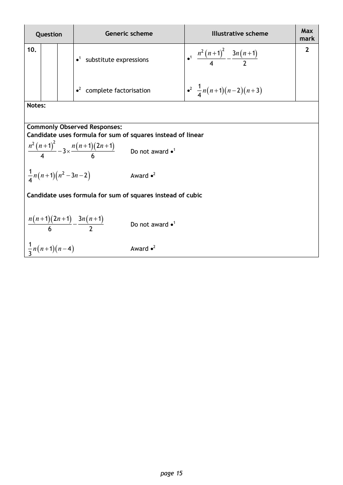
Selectable page text
Max
Question Generic scheme Illustrative scheme
mark
10. n²(n+1)² 3n(n+1) 2
•1 substitute expressions •1 −
4 2
1
•2 complete factorisation •2 n(n+1)(n−2)(n+3)
4
Notes:
C ommonly Observed Responses:
Candidate uses formula for sum of squares instead of linear
n²(n+1)² n(n+1)(2n+1)
−3× Do not award •¹
4 6
1 n(n+1)(
n² −3n−2
)
Award •²
4
Candidate uses formula for sum of squares instead of cubic
n(n+1)(2n+1) 3n(n+1)
− Do not award •¹
6 2
1
n(n+1)(n−4) Award •²
3
page 15PDF page 16
Paper 2, Question 11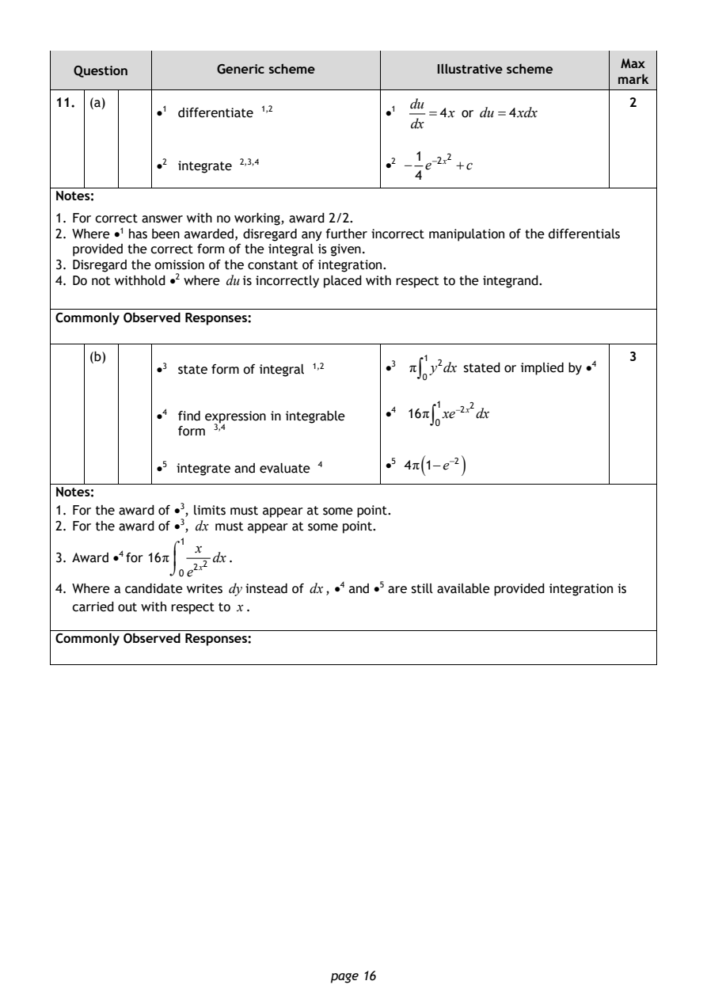
Selectable page text
Max
Question Generic scheme Illustrative scheme
mark
11. (a) du 2
•1 differentiate ¹^{,}² •1 =4x or du =4xdx
dx
1
•2 integrate ²^{,}³^{,}4 •2 − e⁻²^{x}² +c
4
Notes:
1. For correct answer with no working, award 2/2.
2. Where •¹ has been awarded, disregard any further incorrect manipulation of the differentials
provided the correct form of the integral is given.
3. Disregard the omission of the constant of integration.
4. Do not withhold •² where duis incorrectly placed with respect to the integrand.
Commonly Observed Responses:
(b) 3
•3 state form of integral ¹^{,}² •3 π∫₀¹y²dx stated or implied by •⁴
•4 find exp₄ression in integrable •4 16π∫₀¹xe⁻²^{x}²dx
form ³^{,}
( )
•5 integrate and evaluate ⁴ •5 4π 1−e⁻²
Notes:
1. For the award of •³, limits must appear at some point.
2. For the award of •³, dx must appear at some point.
1
⌠ x
3. Award •⁴ for 16π dx.
⌡ e²^{x}²
0
4. Where a candidate writes dyinstead of dx, •⁴ and •⁵ are still available provided integration is
carried out with respect to x.
Commonly Observed Responses:
page 16PDF page 17
Paper 2, Question 12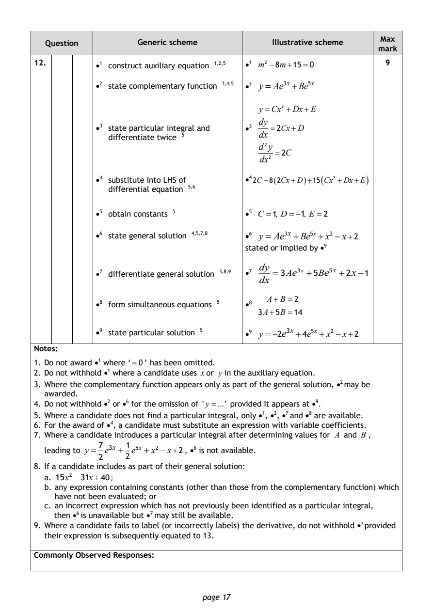
Selectable page text
Max
Question Generic scheme Illustrative scheme
mark
12. •1 construct auxiliary equation ¹^{,}²^{,}5 •1 m² −8m+15=0 9
•2 state complementary function ³^{,}⁴^{,}5 •2 y= Ae³^{x} +Be⁵^{x}
y =Cx² +Dx+E
dy
•3 state particular integral and •3 =2Cx+D
dx
differentiate twice ⁵
d²y
=2C
dx²
•4 substitute into LHS of •42C−8(2Cx+D)+15 (Cx²+Dx+E)
differential equation ⁵^{,}⁶
•5 obtain constants ⁵ •5 C =1, D=−1, E =2
•6 state general solution ⁴^{,}⁵^{,}7,8 •6 y= Ae³^{x} +Be⁵^{x} +x² −x+2
stated or implied by •⁹
dy
•7 differentiate general solution ⁵^{,}⁸^{,}9 •7 =3Ae³^{x} +5Be⁵^{x} +2x−1
dx
A+B=2
•8 form simultaneous equations ⁵ •8
3A+5B=14
•9 state particular solution ⁵ •9 y=−2e³^{x} +4e⁵^{x} +x² −x+2
Notes:
1. Do not award •¹ where ‘=0’ has been omitted.
2. Do not withhold •¹ where a candidate uses xor yin the auxiliary equation.
3. Where the complementary function appears only as part of the general solution, •² may be
awarded.
4. Do not withhold •² or •⁶ for the omission of 'y=...' provided it appears at •⁹.
5. Where a candidate does not find a particular integral, only •¹, •2, •7 and •⁸ are available.
6. For the award of •⁴, a candidate must substitute an expression with variable coefficients.
7. Where a candidate introduces a particular integral after determining values for A and B,
7 1
leading to y= e³ x + e⁵^{x} +x² −x+2, •⁶ is not available.
2 2
8. If a candidate includes as part of their general solution:
a. 15x² −31x+40;
b. any expression containing constants (other than those from the complementary function) which
have not been evaluated; or
c. an incorrect expression which has not previously been identified as a particular integral,
then •⁶ is unavailable but •⁷ may still be available.
9. Where a candidate fails to label (or incorrectly labels) the derivative, do not withhold •⁷ provided
their expression is subsequently equated to 13.
Commonly Observed Responses:
page 17PDF page 18
Paper 2, Question 13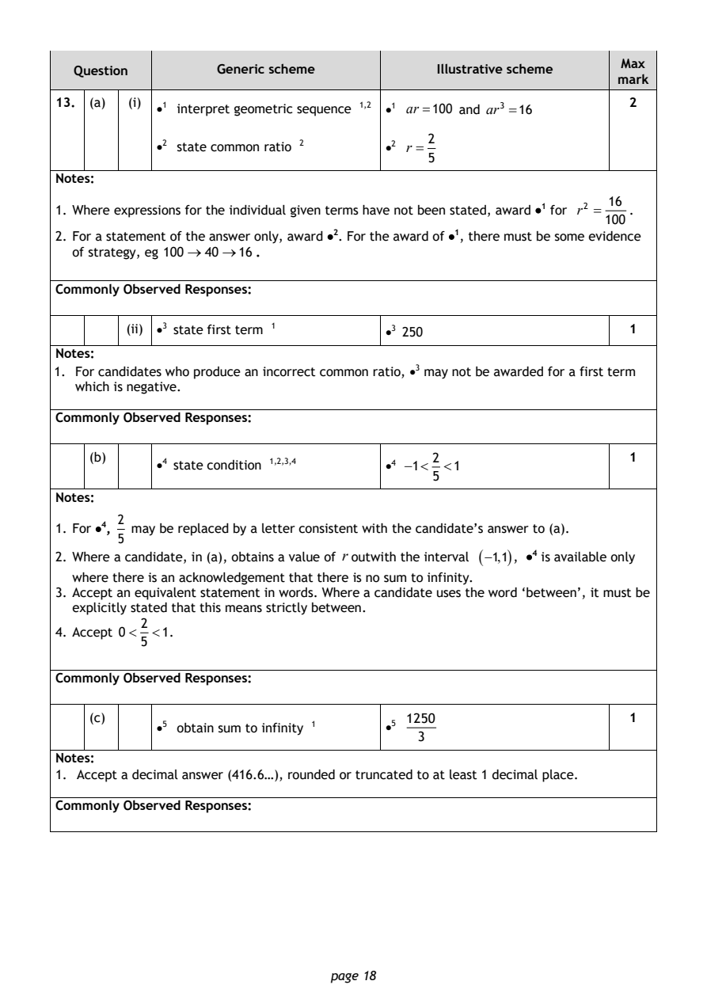
Selectable page text
Max
Question Generic scheme Illustrative scheme
mark
13. (a) (i) 2
•1 interpret geometric sequence ¹^{,}² •1 ar =100 and ar³ =16
2
•2 state common ratio ² •2 r =
5
Notes:
16
1. Where expressions for the individual given terms have not been stated, award •¹ for r² = .
100
2. For a statement of the answer only, award •². For the award of •¹, there must be some evidence
of strategy, eg 100 →40 →16.
Commonly Observed Responses:
(ii) •3 state first term ¹ •3 250 1
Notes:
1. For candidates who produce an incorrect common ratio, •³ may not be awarded for a first term
which is negative.
Commonly Observed Responses:
(b) 2 1
•4 state condition ¹^{,}²^{,}3,4 •4 −1< <1
5
Notes:
2
1. For •⁴, may be replaced by a letter consistent with the candidate’s answer to (a).
5
2. Where a candidate, in (a), obtains a value of routwith the interval (−1,1), •4 is available only
where there is an acknowledgement that there is no sum to infinity.
3. Accept an equivalent statement in words. Where a candidate uses the word ‘between’, it must be
explicitly stated that this means strictly between.
2
4. Accept 0< <1.
5
Commonly Observed Responses:
(c) 1250 1
•5 obtain sum to infinity ¹ •5
3
Notes:
1. Accept a decimal answer (416.6…), rounded or truncated to at least 1 decimal place.
Commonly Observed Responses:
page 18PDF page 19
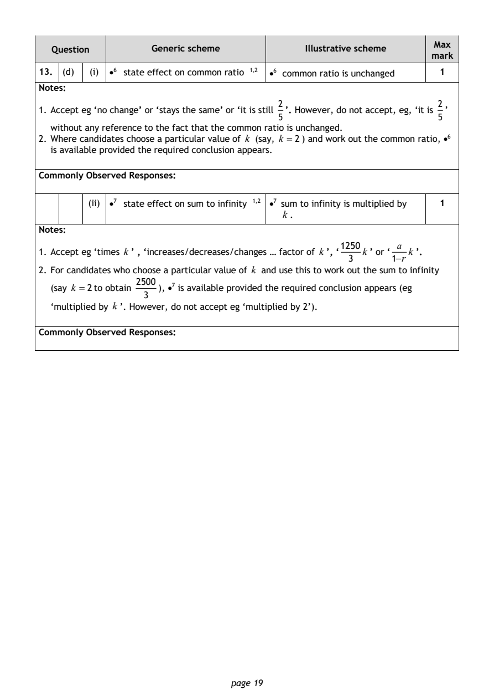
Selectable page text
Max
Question Generic scheme Illustrative scheme
mark
13. (d) (i) •6 state effect on common ratio ¹^{,}² •6 common ratio is unchanged 1
Notes:
2 2
1. Accept eg ‘no change’ or ‘stays the same’ or ‘it is still ’. However, do not accept, eg, ‘it is ’
5 5
without any reference to the fact that the common ratio is unchanged.
2. Where candidates choose a particular value of k (say, k = 2) and work out the common ratio, •⁶
is available provided the required conclusion appears.
Commonly Observed Responses:
(ii) •7 state effect on sum to infinity ¹^{,}² •7 sum to infinity is multiplied by 1
k .
Notes:
1250 a
1. Accept eg ‘times k ’ , ‘increases/decreases/changes … factor of k ’, ‘ k ’ or ‘ k ’.
3 1−r
2. For candidates who choose a particular value of k and use this to work out the sum to infinity
2500
(say k =2to obtain ), •7 is available provided the required conclusion appears (eg
3
‘multiplied by k ’. However, do not accept eg ‘multiplied by 2’).
Commonly Observed Responses:
page 19PDF page 20
Paper 2, Question 14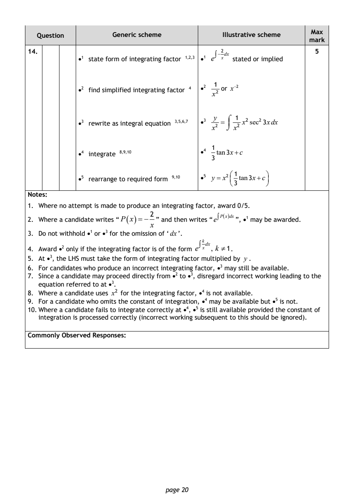
Selectable page text
Max
Question Generic scheme Illustrative scheme
mark
14. 5
∫ x
•1 state form of integrating factor ¹^{,}²^{,}3 •1 e ⁻²^{x}^{d} stated or implied
1
•2 find simplified integrating factor ⁴ •2 or x⁻²
x²
y ⌠ 1
•3 rewrite as integral equation ³^{,}⁵^{,}6,7 •3 = x²sec²3xdx
x² ⌡ x²
1
•4 integrate ⁸^{,}⁹^{,}10 •4 tan3x+c
3
1
•5 rearrange to required form ⁹^{,}¹⁰ •5 y = x² tan3x+c
3
Notes:
1. Where no attempt is made to produce an integrating factor, award 0/5.
2
2. Where a candidate writes “P(x)=− ” and then writes “e ∫ ^{P} ( ^{x} )dx ”, •1 may be awarded.
x
3. Do not withhold •¹ or •³ for the omission of ‘dx’.
∫
4. Award •² only if the integrating factor is of the form e ^{k}^{x}^{d}^{x}, k ≠1.
5. At •³, the LHS must take the form of integrating factor multiplied by y.
6. For candidates who produce an incorrect integrating factor, •³ may still be available.
7. Since a candidate may proceed directly from •² to •³, disregard incorrect working leading to the
equation referred to at •³.
8. Where a candidate uses x² for the integrating factor, •⁴ is not available.
9. For a candidate who omits the constant of integration, •⁴ may be available but •⁵ is not.
10. Where a candidate fails to integrate correctly at •⁴, •5 is still available provided the constant of
integration is processed correctly (incorrect working subsequent to this should be ignored).
Commonly Observed Responses:
page 20PDF page 21
Paper 2, Question 15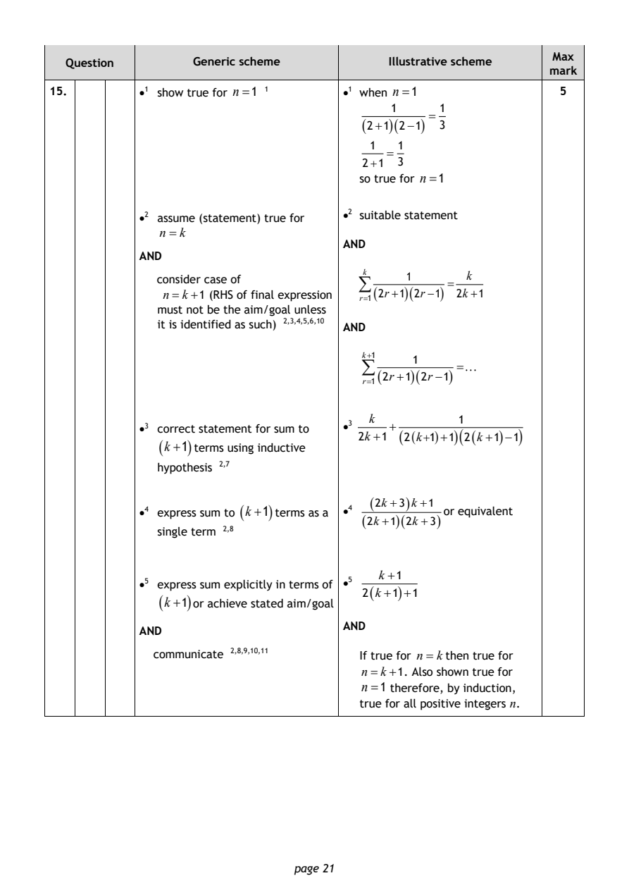
Selectable page text
Max
Question Generic scheme Illustrative scheme
mark
15. •1 show true for n=1 ¹ •1 when n=1 5
1 1
=
(2+1)(2−1) 3
1 1
=
2+1 3
so true for n=1
•2 assume (statement) true for •2 suitable statement
n =k
AND
AND
consider case of ∑ k 1 = k
n=k+1 (RHS of final expression (2r+1)(2r−1) 2k+1
r=1
must not be the aim/goal unless
it is identified as such) ²^{,}³,4,5,6,10 AND
k+1 1
∑ =
(2r+1)(2r−1)
r=1
k 1
•3 correct statement for sum to •3 +
2k+1 (2(k+1)+1)( 2(k+1)−1 )
(k +1)
terms using inductive
hypothesis ²^{,}⁷
(2k+3)k+1
•4 express sum to (k +1) terms as a •4 or equivalent
(2k+1)(2k+3)
single term ²^{,}⁸
k+1
•5 express sum explicitly in terms of •⁵
2(k+1)+1
(k+1)
or achieve stated aim/goal
AND
AND
communicate ²^{,}⁸^{,}9,10,11 If true for n =kthen true for
n=k+1. Also shown true for
n=1 therefore, by induction,
true for all positive integers n.
page 21PDF page 22
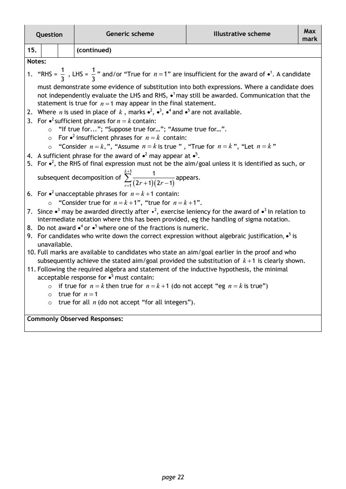
Selectable page text
Max
Question Generic scheme Illustrative scheme
mark
15. (continued)
Notes:
1 1
1. “RHS = , LHS = ” and/or “True for n=1” are insufficient for the award of •¹. A candidate
3 3
must demonstrate some evidence of substitution into both expressions. Where a candidate does
not independently evaluate the LHS and RHS, •¹ may still be awarded. Communication that the
statement is true for n=1 may appear in the final statement.
2. Where nis used in place of k , marks •², •3, •4 and •⁵ are not available.
3. For •² sufficient phrases forn =kcontain:
o “If true for...”; “Suppose true for…”; “Assume true for…”.
o For •² insufficient phrases for n = k contain:
o “Consider n=k,”, “Assume n =kis true ” , “True for n = k”, “Let n = k”
4. A sufficient phrase for the award of •² may appear at •⁵.
5. For •², the RHS of final expression must not be the aim/goal unless it is identified as such, or
1
subsequent decomposition of ∑^{k}⁺¹ appears.
(2r+1)(2r−1)
r=1
6. For •² unacceptable phrases for n=k+1 contain:
o “Consider true for n=k+1”, “true for n=k+1”.
7. Since •³ may be awarded directly after •², exercise leniency for the award of •³ in relation to
intermediate notation where this has been provided, eg the handling of sigma notation.
8. Do not award •⁴ or •⁵ where one of the fractions is numeric.
9. For candidates who write down the correct expression without algebraic justification, •⁵ is
unavailable.
10. Full marks are available to candidates who state an aim/goal earlier in the proof and who
subsequently achieve the stated aim/goal provided the substitution of k+1 is clearly shown.
11. Following the required algebra and statement of the inductive hypothesis, the minimal
acceptable response for •⁵ must contain:
o if true for n =kthen true for n=k+1 (do not accept “eg n = kis true”)
o true for n=1
o true for all n(do not accept “for all integers”).
Commonly Observed Responses:
page 22PDF page 23
Paper 2, Question 16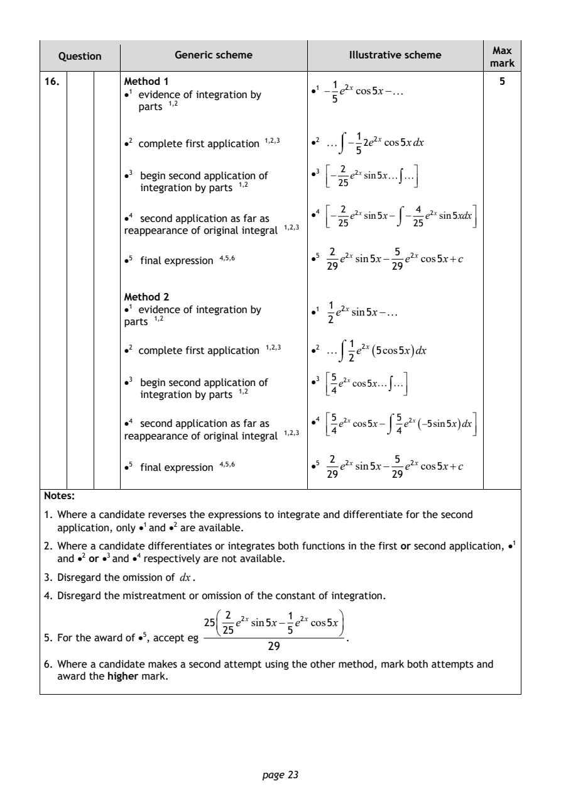
Selectable page text
Max
Question Generic scheme Illustrative scheme
mark
16. Method 1 1 5
•1 evidenc₂e of integration by •1 − e²^{x}cos5x−
5
parts ¹^{,}
⌠ 1
•2 complete first application ¹^{,}²^{,}3 •2 − 2e²^{x}cos5xdx
⌡ 5
•3 begin second applicati₂on of •3 − 2 e²^{x}sin5x ∫
25
integration by parts ¹^{,}
•4 second application as far as •4 − 2 2 5 e²^{x}sin5x− ⌠ ⌡ − 2 4 5 e²^{x}sin5xdx
reappearance of original integral ¹^{,}²^{,}3
2 5
•5 final expression ⁴^{,}⁵^{,}6 •5 e²^{x}sin5x− e²^{x}cos5x+c
29 29
Method 2
1
•1 evide₂nce of integration by •1 e²^{x}sin5x−
parts ¹^{,} 2
•2 complete first application ¹^{,}²^{,}3 •2 ⌠ 1 e²^{x}(5cos5x)dx
⌡ 2
•3 begin second applicati₂on of •3 5 e²^{x}cos5x ∫
integration by parts ¹^{,}
4
•4 second application as far as •4 5 e²^{x}cos5x− ⌠ 5 e²^{x}(−5sin5x)dx
reappearance of original integral ¹^{,}²^{,}3 4 ⌡ 4
2 5
•5 final expression ⁴^{,}⁵^{,}6 •5 e²^{x}sin5x− e²^{x}cos5x+c
29 29
Notes:
1. Where a candidate reverses the expressions to integrate and differentiate for the second
application, only •¹ and •² are available.
2. Where a candidate differentiates or integrates both functions in the first or second application, •¹
and •² or •³ and •⁴ respectively are not available.
3. Disregard the omission of dx.
4. Disregard the mistreatment or omission of the constant of integration.
2 1
25 e²^{x}sin5x− e²^{x}cos5x
25 5
5. For the award of •⁵, accept eg .
29
6. Where a candidate makes a second attempt using the other method, mark both attempts and
award the higher mark.
page 23PDF page 24
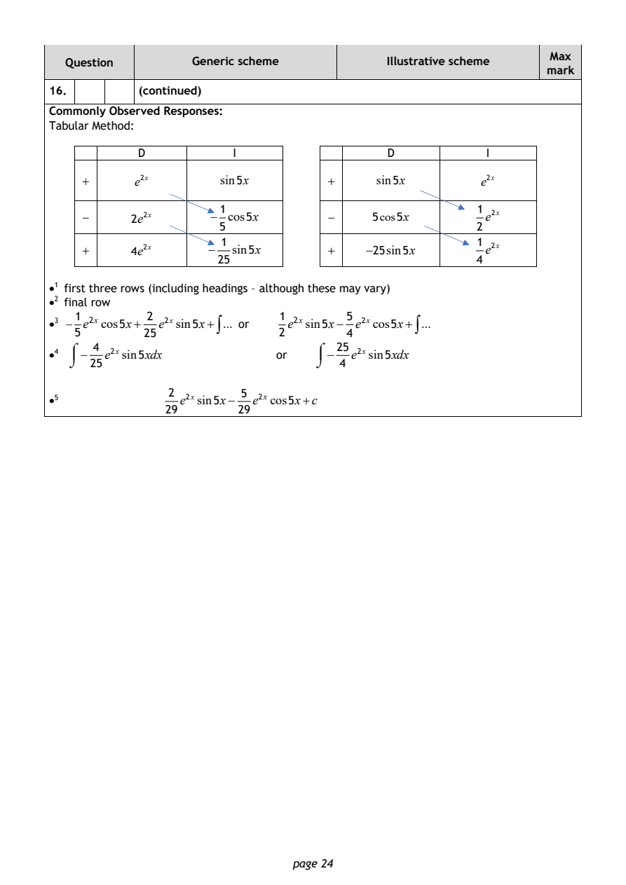
Selectable page text
Max
Question Generic scheme Illustrative scheme
mark
16. (continued)
Commonly Observed Responses:
Tabular Method:
D I D I
+ e²^{x} sin5x + sin5x e²^{x}
1 1
− 2e²^{x} − cos5x − 5cos5x e²^{x}
5 2
1 1
+ 4e²^{x} − sin5x + −25sin5x e²^{x}
25 4
•1 first three rows (including headings – although these may vary)
•2 final row
1 2 1 5
•3 − e²^{x}cos5x+ e²^{x}sin5x+∫... or e²^{x}sin5x− e²^{x}cos5x+∫...
5 25 2 4
⌠ 4 ⌠ 25
•4 − e²^{x}sin5xdx or − e²^{x}sin5xdx
⌡ 25 ⌡ 4
2 5
•5 e²^{x}sin5x− e²^{x}cos5x+c
29 29
page 24PDF page 25
Paper 2, Question 17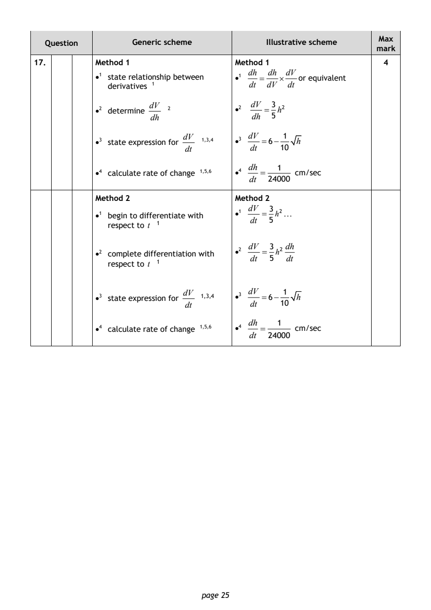
Selectable page text
Max
Question Generic scheme Illustrative scheme
mark
17. Method 1 Method 1 4
dh dh dV
•1 state relationship between •1 = × or equivalent
derivatives ¹ dt dV dt
dV ₂ dV 3
•2 determine •2 = h²
dh dh 5
dV ₁_{,}₃ dV 1
•3 state expression for ,4 •3 =6− h
dt dt 10
dh 1
•4 calculate rate of change ¹^{,}⁵^{,}6 •4 = cm/sec
dt 24000
Method 2 Method 2
dV 3
•1 begin to differentiate with •1 = h²
dt 5
respect to t ¹
dV 3 dh
•2 complete differentiation with •2 = h²
dt 5 dt
respect to t ¹
dV ₁_{,}₃ dV 1
•3 state expression for ,4 •3 =6− h
dt dt 10
dh 1
•4 calculate rate of change ¹^{,}⁵^{,}6 •4 = cm/sec
dt 24000
page 25PDF page 26
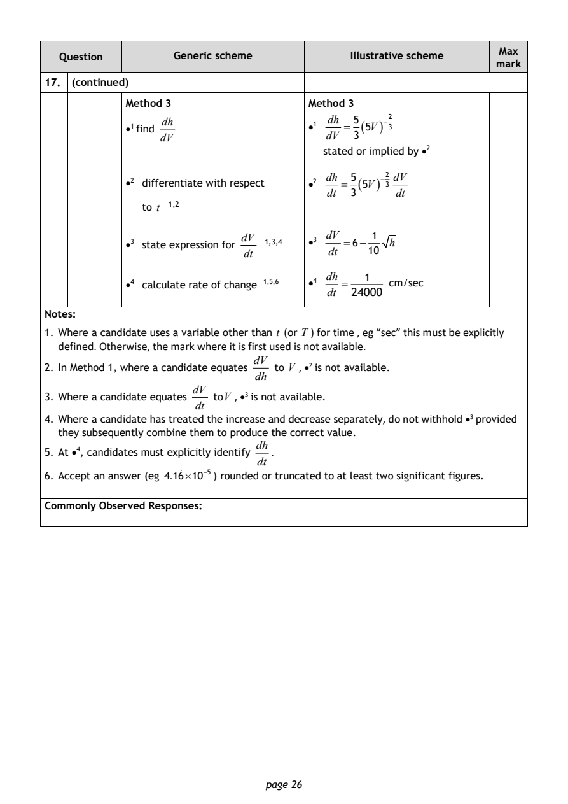
Selectable page text
Max
Question Generic scheme Illustrative scheme
mark
17. (continued)
Method 3 Method 3
•1 find dh •1 dh = 5 (5V)⁻²³
dV dV 3
stated or implied by •²
dh 5 dV
•2 differentiate with respect •2 = (5V)⁻²³
dt 3 dt
to t ¹^{,}²
dV ₁_{,}₃ dV 1
•3 state expression for ,4 •3 =6− h
dt dt 10
dh 1
•4 calculate rate of change ¹^{,}⁵^{,}6 •4 = cm/sec
dt 24000
Notes:
1. Where a candidate uses a variable other than t (or T ) for time , eg “sec” this must be explicitly
defined. Otherwise, the mark where it is first used is not available.
dV
2. In Method 1, where a candidate equates to V , •² is not available.
dh
dV
3. Where a candidate equates toV , •³ is not available.
dt
4. Where a candidate has treated the increase and decrease separately, do not withhold •³ provided
they subsequently combine them to produce the correct value.
dh
5. At •⁴, candidates must explicitly identify .
dt
6. Accept an answer (eg 4.16×10⁻⁵) rounded or truncated to at least two significant figures.
Commonly Observed Responses:
page 26PDF page 27
Paper 2, Question 18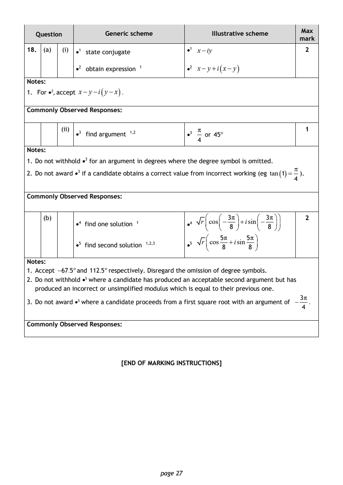
Selectable page text
Max
Question Generic scheme Illustrative scheme
mark
18. (a) (i) •1 state conjugate •1 x−iy 2
•2 obtain expression ¹ •2 x− y+i(x− y)
Notes:
1. For •², accept x− y−i(y−x) .
Commonly Observed Responses:
(ii) π 1
•3 find argument ¹^{,}² •3 or 45°
4
Notes:
1. Do not withhold •³ for an argument in degrees where the degree symbol is omitted.
π
2. Do not award •³ if a candidate obtains a correct value from incorrect working (eg tan(1)= ).
4
Commonly Observed Responses:
(b) 3π 3π 2
r cos − +isin −
•4 find one solution ¹ •4
8 8
5π 5π
r cos +isin
•5 find second solution ¹^{,}²^{,}3 •5
8 8
Notes:
1. Accept −67.5°and 112.5°respectively. Disregard the omission of degree symbols.
2. Do not withhold •⁵ where a candidate has produced an acceptable second argument but has
produced an incorrect or unsimplified modulus which is equal to their previous one.
3π
3. Do not award •⁵ where a candidate proceeds from a first square root with an argument of − .
4
Commonly Observed Responses:
[END OF MARKING INSTRUCTIONS]
page 27